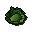

Draynor Manor
Town at 3108, 3345 · Kingdom Of Misthalin
Open on the world map → Open in knowledge graph → Below: Draynor Manor (underground)
NPCs
| NPC | Level | Spawns | Notable drops |
|---|---|---|---|
| 25 | 1 | Herb drop table, Coins, Bronze arrow, Iron dagger | |
| 25 | 1 | ||
| 19 | 5 | ||
| 5 | 1 | Coins, Water rune, Body rune, Goblin mail | |
| 2 | 1 | ||
| 1 | 2 | ||
| 1 | |||
| 1 | |||
| 10 | |||
| 1 |
Ground items

Cabbage x7